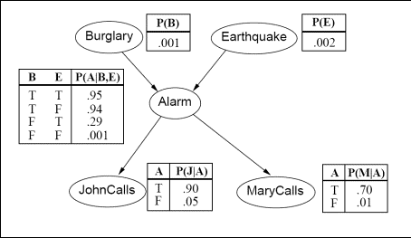

Figure 1: A Bayesian network establishing
relations between events on the burglary-earthquake-alarm domain,
together with complete specifications of all probability distributions.
For the Bayesian network of Figure 1, implement a program that
computes and prints out the probability of any combination of events
given any other combination of events. If the executable is called
bnet, here are some example invocations of the program:
- To print out the probability P(Burglary=true and
Alarm=false | MaryCalls=false).
bnet Bt Af given Mf
- To print out the probability P(Alarm=false and
Earthquake=true).
bnet Af Et
- To print out the probability P(JohnCalls=true and
Alarm=false | Burglary=true and Earthquake=false).
bnet Jt Af given Bt Ef
- To print out the probability P(Burglary=true and
Alarm=false and MaryCalls=false and JohnCalls=true and Earthquake=true).
bnet Bt Af Mf Jt Et
In general, bnet takes 1 to 6(no more, no fewer) command line
arguments, as follows:
- First, there are one to five arguments, each argument
specifying a variable among Burglary, Earthquake, Alarm, JohnCalls, and
MaryCalls and a value equal to true or false. Each of these arguments
is a string with two letters. The first letter is B (for Burglary), E
(for Earthquake), A (for Alarm), J (for JohnCalls) or M (for
MaryCalls). The second letter is t (for true) or f (for false). These
arguments specify a combination C1 of events whose probability we want
to compute. For example, in the first example above, C1 =
(Burglary=true and Alarm=false), and in the second example above C1 =
(Alarm=false and Earthquake=true).
- Then, optionally, the word "given" follows, followed by one
to four arguments. Each of these one to four arguments is again a
string with two letters, where, as before the first letter is B (for
Burglary), E (for Earthquake), A (for Alarm), J (for JohnCalls) or M
(for MaryCalls). The second letter is t (for true) or f (for false).
These last arguments specify a combination of events C2 such that we
need to compute the probability of C1 given C2. For example, in the
first example above C2 = (MaryCalls=false), and in the second example
there is no C2, so we simply compute the probability of C1, i.e.,
P(Alarm=false and Earthquake=true).
The implementation should not contain hardcoded values for all
combinations of arguments. Instead, your code should use the tables
shown on Figure 1 and the appropriate formulas to evaluate the
probability of the specified event. It is OK to hardcode values from
the tables on Figure 1 in your code, but it is not OK to hard code
values for all possible command arguments, or probability values for
all possible atomic events. More specifically, for full credit, the
code should include and use a Bayesian network class. The class should
include a member function called computeProbability(b, e, a, j, m),
where each argument is a boolean, specifying if the corresponding event
(burglary, earthquake, alarm, john-calls, mary-calls) is true or false.
This function should return the joint probability of the five events.